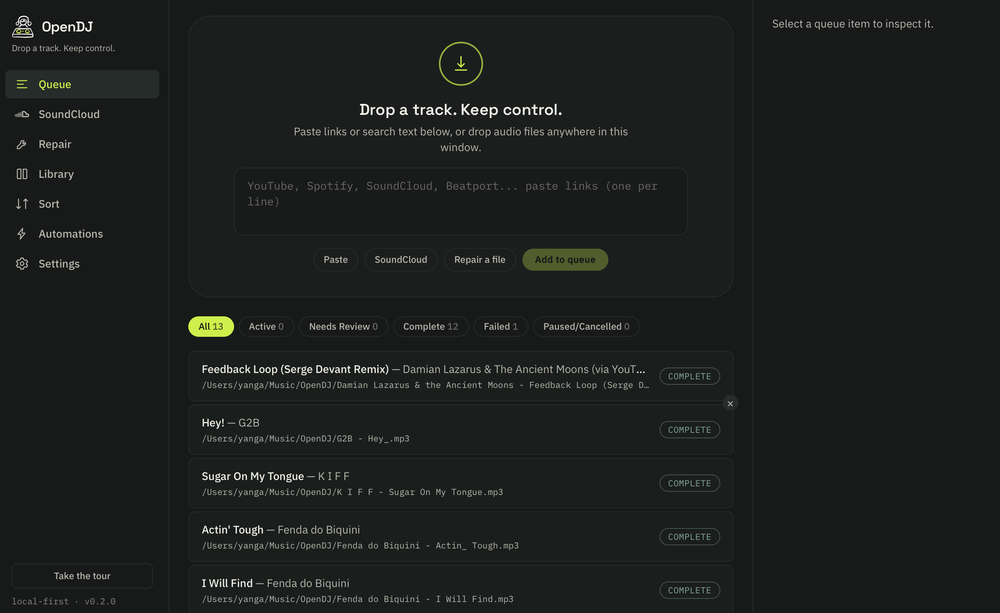
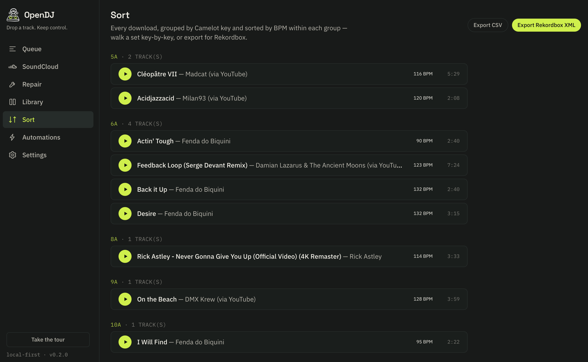
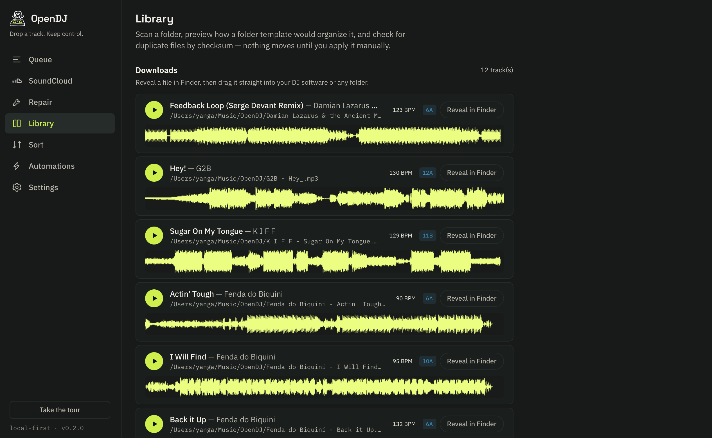

Download, organize, and prepare tracks for your DJ sets. No accounts. No subscriptions. Your library stays on your machine — cloud sync and community are opt-in, anonymous, and never required.
Features
Built for DJs who want speed and control, not another cloud platform.
Paste a link from YouTube, SoundCloud, Beatport, or 1800+ other sites. Downloads as 320kbps MP3. No API keys needed.
Template-based folder organization. Set it once: {artist}/{album}/{title} and every track lands in the right place.
Every file mutation is journaled. One click to restore originals. Your library is never at risk.
Search your entire library by title, artist, BPM, key, genre, or any tag. Instant results, even with 50k+ tracks.
Edit ID3 tags on dozens of tracks at once. Fix artist names, add genres, normalize capitalization in bulk.
Download up to 16 tracks simultaneously. Adjustable concurrency in settings. Saturate your connection.
Automatic Camelot key detection and BPM analysis using libkeyfinder. Harmonic mixing made easy.
Enlarge any track into a low/mid/high frequency-colored waveform — RGB, 3-Band, or Classic Blue. Click anywhere to set a hot cue without pressing play.
Split any track into isolated vocals, drums, bass, and other stems — real source separation, not an EQ trick. Runs fully on-device.
Opt-in, no-signup sync for BPM, key, hot cues, and preferences across your devices — identified by a recovery key, never an account.
Share crates and song links, upvote, comment, and @mention other DJs — anonymous by default, a username is all it takes.
Export any crate straight to Rekordbox XML or a native Serato crate file, hot cues and colors included.
Paste a SoundCloud username to fetch and download their entire likes library. Direct API — no API key needed.
Colored Waveform View
Two ways to read a waveform at a glance — pick whichever reads best for your ears.
RGB Mode — true low/mid/high spectral color, computed live off a real 2048-bin FFT
3-Band Mode — blue/amber/white bands scaled against each other, so a drop reads loud and a breakdown reads thin
How it works
Drop any URL from YouTube, SoundCloud, Beatport, Spotify, or a local file path. OpenDJ detects the source automatically.
yt-dlp downloads the best quality available. ffmpeg converts to MP3 320kbps. Tags are pulled from the source.
Tracks land in your library, organized by your template. Ready for your DJ software. All on your local disk.
See it in action
From queue to key-sorted crate — one app, no context switching.



Queue — paste a link and watch it download, tag, and organize itself.
Roadmap
OpenDJ is actively developed. Here's what's next.
Stem separation runs CPU-only today for zero-setup reliability on every machine. GPU acceleration (Metal, CUDA, DirectML) is next, for near-instant splits.
The Community tab refreshes on demand today. Real-time updates — new shares, upvotes, and replies appearing live — are next.
Pick your own low/mid/high colors for the waveform view instead of the built-in RGB, 3-Band, and Classic Blue presets.
Choose your download format — WAV, FLAC, MP3, and more — instead of always converting to 320kbps MP3.
Checksum-based duplicate finder across your library. Merge metadata, remove redundant copies safely.
Auto-updating smart playlists based on rules: BPM range, key, genre, date added, play count, and more.
Build DJ sets with harmonic mixing suggestions. Drag tracks into a timeline, see key compatibility at a glance.
AI-powered next-track suggestions based on BPM, key, energy, and your historical set patterns.
Browse and rate your library from your phone while away from the laptop. Sync ratings back when you reconnect.
Get started
Free and open source. No account required. Download, run, and start preparing your sets.
macOS says OpenDJ “is damaged”? That's Gatekeeper on a non-notarized build, not a bad download — one Terminal command fixes it.